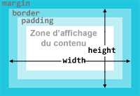

Par défaut une boîte est dimensionnée automatiquement par la
navigateur : elle a pour largeur la largeur de son conteneur (élément
parent ou fenêtre du navigateur) et pour hauteur l'espace minimum
pour que leur contenu y tienne, ni plus, ni moins.
Il est toutefois possible de spécifier des autres dimensions et de
définir des tailles minimum ou maximum.
Les boîtes de type en ligne (display:
inline;) ne peuvent pas être dimensionnées.
Largeur et hauteur
Les propriétés width
et height
définissent la largeur et la hauteur d'une boîte.
Suivant la valeur de la propriété box-sizing,
largeur et hauteur ne sont pas calculées de la même façon.
Par défaut (box-sizing: content-box;), les largeurs
et hauteurs sont celles de de la zone
d'affichage de la boîte
Si la valeur de la propriété box-sizing
est border-box, les largeurs et hauteurs sont celles
de de la zone d'affichage de la boîte plus
les marges internes plus l'épaisseur des
bordures.

largeur et hauteur
du modèle avec bords
margin-left
+ width + margin-right ---------------- largeur
totale
margin-top
+ height + margin-bottom ---------------- hauteur
totale
la propriété box-sizing
n'est pas connue des navigateurs d'anciennes générations et il est
donc déconseillé de l'utiliser si vous ciblez un maximum
d'utilisateurs.
Dans la suite du tutoriel, nous considérerons que nous travaillons
avec le modèle par défaut.
Tester les dimensions
L'unité de taille pour définir la hauteur ou la largeur est à
choisir en fonction du dispositif d'affichage. Par exemple il ne
faut pas utiliser des centimètres pour afficher sur un écran pour
lequel on privilégiera le pixel CSS (px), le cadratin (em),
le pourcentage (%) ou la référence à la racine du
document (rem).
Les unités utilisées peuvent être différentes pour la hauteur et
pour la largeur d'un élément.
Si on utilise l'unité em pour définir la hauteur ou la
largeur, la valeur sera basée sur la taille de la police à
l'intérieur de la boîte.
Si on utilise l'unité % pour définir la hauteur ou la
largeur, le pourcentage sera calculé par rapport à l'élément parent
de la boîte. Si l'élément a pour parent body le
pourcentage sera calculé par rapport à la fenêtre du navigateur. Un
redimensionnement de la fenêtre entraînera automatiquement un
redimensionnement de la boîte. Une telle mise en page est appelée
fluide (fluid layout) ou élastique (elastic layout).
Redimensionnez la fenêtre de test
pour voir le changement de largeur de la mise en page.
Dimensions minimum et maximum
Il est possible de définir des dimensions minimum et maximum pour la
largeur et la hauteur d'une boîte avec les propriétés min-width,
max-width,
min-height
et max-height
Si on reprend l'exemple précédent, on s'aperçoit que si la fenêtre
du navigateur fait moins de 600 pixels de large, l'image de fond du
bandeau n'est pas affichée entièrement. Si à l'inverse la largeur de
la fenêtre est très grande, le texte principale devient difficile à
lire car les lignes sont trop grandes.
Pour éviter ces problèmes, on peut utiliser min-width
et max-width
sur l'élément div
identifié par #page.
Redimensionnez la fenêtre de test
pour voir le changement de largeur de la mise en page et les valeurs
mini ou maxi qui stoppent la réduction ou l'agrandissement.